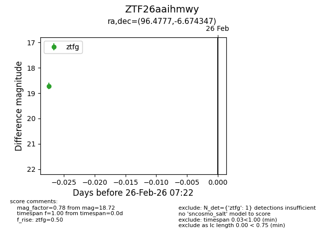
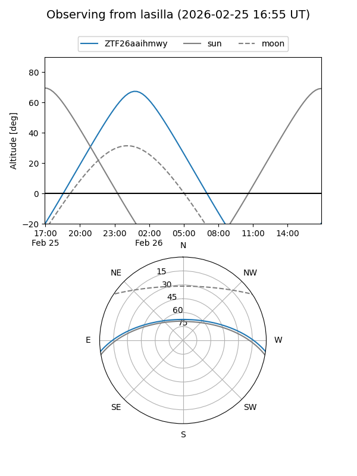
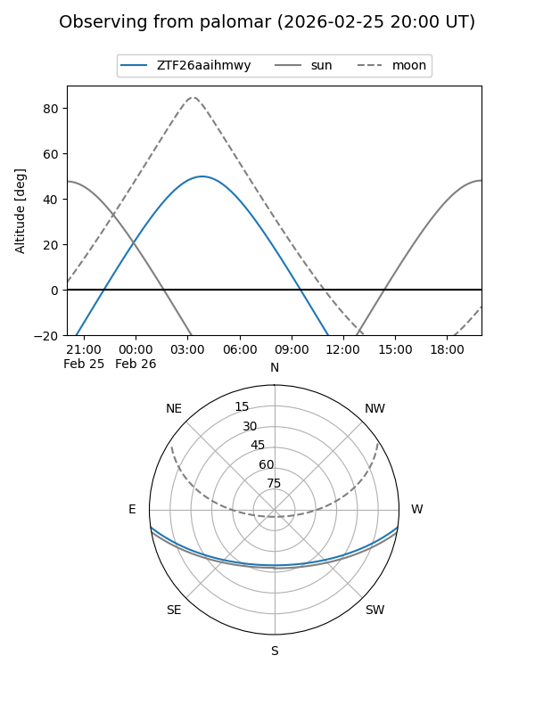

ZTF26aaihmwy
Target ZTF26aaihmwy at 2026-02-26 07:23
Aliases and brokers:
FINK: link
Lasair: link
ALeRCE: link
alt names
ZTF26aaihmwy (ztf,fink_ztf)
Coordinates:
equatorial (ra, dec) = 96.4777,-6.67435
equatorial (HMS+DMS) = 06:25:54.64,-06:40:27.65
galactic (l, b) = (216.0112,-8.69949)
Flags:
Photometry:
last ztfg=18.72
1 ztfg detections
Lightcurve

Visibility


Additional plots